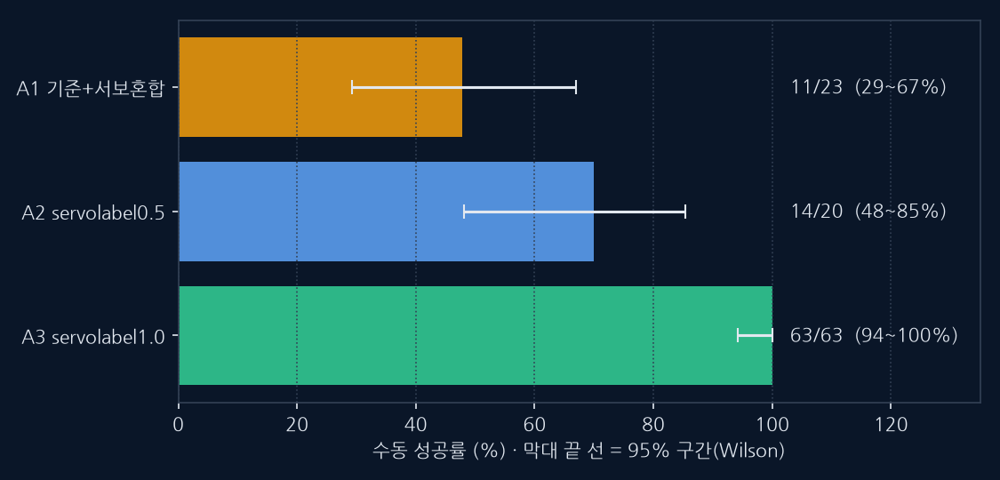
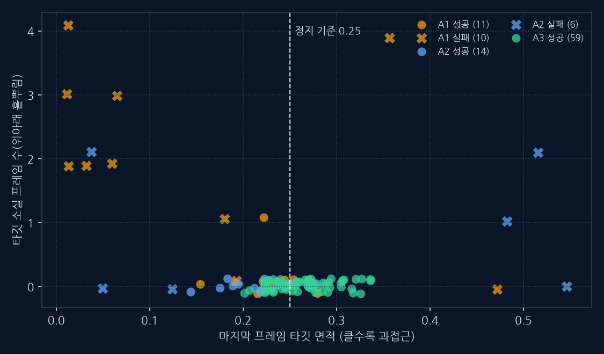
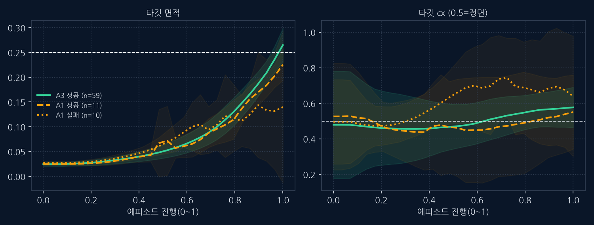
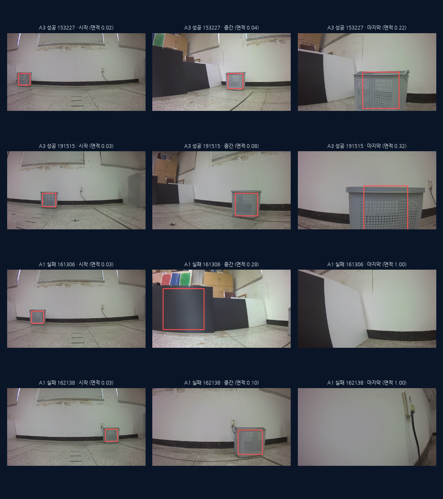

갱신: 2026-10-28. 이 탭의 수치는 `docs/v5/egvla2_fm/*.json` 원본에서 생성. 체인 마지막 줄: 10-28 05:34 fullstage 종료(exit 0). 전 단계 E2E는 완료 후 같은 표로 갱신.
1. 어디까지 왔나
영역 상태 내용 다음 완료 오프라인 학습·평가 헤드 비교, 서브골, 이산/연속, 데이터량, 서빙 파라미터·학습 설정·보조 목표 ablation(200회 이상), 간극 지표 5종, 서보 라벨, E1/E1b — 완료 실기 드라이런 분석(10/22) 유효 SYNC 16세션(저장 오류 3개 제외): 시작 회전 누락·부호·컨트롤러 환경·타깃 서보 부재·전처리 동등·순서 정렬 — 완료 서빙 수정 회전 상태, 부호 정정(+az=우회전), 크기 기반 정지 래치 끔, 타깃 서보 환경변수(기본 끔) 로봇 pull·재시작 확인 대기 완료 E2E 일반 비교(마지막 단계 LoRA) 같은 조건 3개 분할 비교 완료 — 결과는 아래 — 완료 E2E 일반 비교(전 단계 LoRA @384) 분할 3개 × 8에폭 종료(05:34). B2 3분할 평균 방향 오차 30.9°(기존 EGVLA2 19.6°에 미달). lopo_strong_right B2_lora_all_stages_384_8ep done — 완료 월드 모델식 보조 헤드(Δbbox·Δfeat) 1단계 6조건×3분할: 보조 과제는 학습되나 S 개선 없음(W0 −0.74° → −0.44~−1.06°), 방향 오차 +1~1.5° → 중단 기준 적용 — 완료 실기 폐루프 비교(10/28, pos1) JSON 108·H5 102 수신. 수동 성공 기록: A1 11/23, A2 14/20, A3 63/63(계획 외 블록, 순수 A3). **A3(servolabel1.0)를 현재 모델로 채택** 아래 §5 참고 대기 pos2·pos3 드라이런 10건 `ROS_action/dryrun_startpos/` 미수신. 서버 재부팅(10/27 14:27)으로 자동 반영 스크립트 소실 → 수동 확인 필요 수신 후 분석 부분 측정 실기 폐루프 성공률 pos1 × 5 목표 위치만 조건당 약 20회(10/28). pos2·pos3 및 300회 설계는 미실시. EGVLA1 기준선 92.0%(276/300) 채택 모델로 확대 시 진행
2. 무엇이 확정이고 무엇이 가설·정정인가
구분 항목 근거 확정(측정) 서빙 전처리는 학습과 동일, bbox·특징·영상 순서 정렬 정상 서버 bbox와 재계산 bbox 일치, 오프셋 0 최선(40/42) 확정(측정) 학습의 53.7%가 제자리 회전으로 시작, 이 로봇 +az=우회전 데이터 분석 + 실기 회전 부호 관측 확정(측정) 하드웨어는 방향각·부호·throttle만 사용, 학습 속력 라벨은 스틱 크기에서 파생한 값 코드 + 300 에피소드 `joystick_speed_setting`=1.15 확정(측정) 현재 모델은 타깃 bbox 위치에 반응하지 않음(S ≈ −0.7°) 반사실 시험 + 실기 raw 방향이 cx와 무관(Spearman −0.07) 확정(측정) 서보 라벨·E1b로 타깃 반응을 만들 수 있으나 사람 방향 오차가 증가 S +3~+20°, 방향 오차 +9~+22° (3~4개 분할) 확정(측정) 마지막 단계 LoRA E2E는 기존 EGVLA2보다 낫지 않음 같은 조건 3개 분할: 방향 오차 27.8° vs 19.6° 확정(측정) 서보 라벨이 강할수록 실기 성공이 높음(같은 날·같은 설정 비교) 수동 성공 A1 48% < A2 70% < A3 100%(63/63). 실패 세션은 마지막 면적 0.5~0.7·소실 있음. 단 ASYNC·EMA 0.0·연속 블록 순서·A0 기준선 1회라는 한계 정정·철회 사람 방향 오차가 작은 모델이 실기에서도 좋다 A3는 오프라인 사람 방향 오차 +22°였지만 실기 성공 최고. 사람 방향 오차는 모델 선택 기준으로 부적절(사람 라벨이 서보형이 아니기 때문) 가설 실기 이탈의 원인이 서보 부재 10/28 실기에서 서보 라벨 강도와 성공이 함께 상승(근거 강화). 서버 서보 혼합(A1)은 효과 약함 가설 분포 이동(바닥·조명·접근 거리)의 영향 특징 코사인 차 0.004(작음), 효과 크기 미측정 가설 학습의 2프레임 명령 앞섬과 서빙의 정지 후 영상의 차이 정렬 점검으로 현상만 확인, 영향 미측정 가설 연속 구동(ASYNC)·속도 정렬(throttle 50)의 이득 계획·시뮬뿐, 실기 미시험 정정·철회 Gemini 세션의 E2E '2.82° vs 10.42°, 72.9% 급감, BBox 결측 100% 생존' in-sample 값 대 근거 없는 상수. 대시보드·CH79·리포트 정정 정정·철회 대시보드 '실시간 학습 스트림/텔레메트리' 수식·난수로 만든 가짜 곡선. 제거, 실제 상태 파일 폴링으로 교체 정정·철회 E1b_tuned '프로덕션/챔피언' 실기 미배포·미검증, held-out 방향 오차 22~26°로 기준보다 큼. 후보로 정정 정정·철회 이전 분석: '바구니 색이 다르다', 'az 단위당 4배', '현재는 정지-이동' 각각 표시 오류(BGR 변환 누락)/하드웨어가 az 크기를 무시/ASYNC가 API 기본값 — 정정 완료
3. 지표 트레이드오프 — 타깃에 반응하게 만들수록 사람과 멀어진다
📊 그래프 사람 방향 오차 vs 타깃 반응 S (3개 분할 평균, 속이 빈 점은 분할 집합이 달라 참고용)
-5° 0° 5° 10° 15° 20° 12° 16° 20° 24° 28° 32° 36° 목표 S ≥ +10° 사람 방향 오차 (°, 낮을수록 사람과 같음) → 세로: 타깃 반응 S (°, 높을수록 타깃을 따라감) ↑ 기준 E2 라벨 E5 가중 E2+E1 이동 증강(상대 라벨) E1b 절대 서보 E1b_tuned E1b+E8+E5 서보 라벨 λ=0.5 (다른 분할 집합) 서보 라벨 λ=1.0 (다른 분할 집합) ※ 기준 = 현재 배포 모델. 목표 영역은 오른쪽이 아니라 위쪽-왼쪽(S 높고 방향 오차 낮음)이며 아직 비어 있다. 방향 오차 증가 ≤ 3° 목표는 어느 변형도 달성 못함
4. E2E 일반 비교 (같은 조건)
📊 그래프 사람 방향 오차 — 기존 EGVLA2 vs E2E 계열
fold0(같은 위치) center(안 본) strong_right(안 본) A 고정 융합(기존) 13.0° 23.8° 22.0° B0 고정 DaViT 120ep 28.6° 30.8° 29.5° B0 고정 DaViT 20ep 34.1° 33.3° 30.8° B1 마지막 단계 LoRA 20ep 31.2° 31.8° 20.3° 사람 방향 오차(°, 낮을수록 좋음). 같은 6프레임 간격 프레임·같은 분할·같은 라벨·같은 지표 ※ B1은 같은 DaViT 특징의 고정(B0)보다 2~5° 낫지만 기존 융합 특징(A)에는 못 미침. A와 B의 특징 출처가 달라(융합 768 vs DaViT 풀링 1024) A 대 B0 격차에는 특징 차이가 섞임
▦ 표·비교 E2E 일반 비교 표 (3개 분할 평균)
조건(같은 데이터·분할·라벨·지표) 사람 방향 오차 S 회전 재현 가장자리 오차 실기 규칙 전문가 각오차 A 고정 융합 특징(기존 EGVLA2) 19.6° -0.2° 0.23 21.8° 46° B0 고정 DaViT 풀링 120ep 29.6° -3.7° 0.04 37.9° 23° B0 고정 DaViT 풀링 20ep 32.7° -0.4° 0.00 45.7° 22° B1 마지막 단계 LoRA(E2E) 20ep 27.7° -6.3° 0.00 41.2° 31°
※ 전 단계 LoRA(384px)는 진행 중
▦ 표·비교 전 단계 LoRA @384 (완료된 부분)
분할 조건(384px) 방향 오차 S 회전 재현 fold0 B0_frozen_davit384_120ep 29.9° -5.3° 0.14 fold0 B0_frozen_davit384_20ep 33.7° +0.1° 0.00 fold0 B2_lora_all_stages_384_8ep 36.3° -5.6° 0.00 lopo_center B0_frozen_davit384_120ep 40.4° -17.2° 0.00 lopo_center B0_frozen_davit384_20ep 33.3° -2.3° 0.00 lopo_center B2_lora_all_stages_384_8ep 38.5° -9.5° 0.00 lopo_strong_right B0_frozen_davit384_120ep 29.2° +0.5° 0.01 lopo_strong_right B0_frozen_davit384_20ep 30.8° +0.4° 0.00 lopo_strong_right B2_lora_all_stages_384_8ep 17.7° -0.7° 0.04
5. 실기 폐루프 비교(10/28, pos1) — A3 채택
▦ 표·비교 수동 성공 기록(`episode_log_snapshot.csv` 결과 열)과 H5 소실
조건 체크포인트·설정 수동 성공 95% 구간 소실 발생(H5) A1 기준 + 서버 서보 혼합 0.5 11/23 (48%) 29~67% 9/21 A2 servolabel0.5 14/20 (70%) 48~85% 3/20 **A3** servolabel1.0 **63/63 (100%)** 94~100% 0/59 A0 기준 0/1 기준선 없음 —
※ 성공 정의는 수동 기록. A3 63회는 계획 밖에서 먼저 실행된 연속 블록. 구동 ASYNC·EMA 0.0이라 10/22와 비교 불가
▦ 표·비교 성공·실패별 H5 마지막 프레임 bbox
조건 결과 마지막 면적 소실 프레임(평균) 마지막 |cx−0.5| A1 성공 11 0.23 0.1 0.20 A1 실패 10 0.68 2.1 0.13 A2 성공 14 0.22 0.0 0.18 A2 실패 6 0.48 0.8 0.22 A3 성공 59(H5 보유) 0.26 0.0 —
※ 실패의 표식은 마지막 cx가 아니라 큰 마지막 면적(타깃 과접근)과 소실. 성공은 면적 0.22~0.24에서 정지
▦ 표·비교 목표 위치별 성공/전체
목표 위치 A1 A2 A3 strong_left 2/3 4/4 11/11 weak_left 2/4 4/4 13/13 center 1/5 4/4 11/11 weak_right 2/4 1/4 12/12 strong_right 3/4 1/4 12/12
※ A1은 중앙 1/5, A2는 오른쪽 위치 1/4가 약점. A3는 실패 없음
5-2. A3 확정 근거 보강 — 평가 코스와 그림(10/28 실기 63회)
▦ 표·비교 평가 코스: 어느 단계가 무엇을 가렸나
단계 측정 A3에 대해 알려준 것 한계 ① 오프라인 방향 오차 같은 분할·라벨에서 사람 방향과의 차이 A3는 기준보다 +22° 나쁨 → **선택 기준으로 부적합**(철회) 사람 조작이 정답이라는 가정 ② 반사실 민감도 S 타깃 cx를 ±0.2 옮겼을 때 행동 변화 서보 라벨 강도가 높을수록 S 상승(타깃 추종) 오프라인 지표 ③ 구조 비교(E2E·월드모델) 같은 조건 3분할 비교 대체안 어느 것도 기존 융합 특징 방식을 이기지 못함 E2E는 저예산 변형만 시험 ④ 실기 폐루프(10/28 pos1) 수동 성공 판정 + H5 bbox 교차 확인 A3 63/63, A1·A2 실패 표식 없음 ASYNC·EMA 0.0, 연속 블록, pos1만
※ 오프라인 단계는 후보를 거르는 데 썼고, 선택은 실기 폐루프 결과로 했다. 오프라인 사람 방향 오차는 A3에서 오히려 나빴다(+22°)
🖼 실제 데이터 성공률과 95% 구간

A3는 순수 63/63(구간 94~100%). A1·A2와 구간이 거의 겹치지 않는다. 수동 판정이 기준
🖼 실제 데이터 마지막 프레임 bbox 분포 — 수동 판정과 무관한 H5 지표

A1·A2 실패(X)는 마지막 면적이 매우 작거나(타깃 소실) 0.45 이상(과접근)으로 흩어지고, A3(초록)는 59개 전부 면적 0.20~0.34, 소실 0. 한계: 실패 표식은 A1·A2에서 도출했으므로 A3에 다른 유형의 실패가 있었다면 이 그림으로는 못 본다
🖼 실제 데이터 시간에 따른 타깃 bbox 궤적

A3는 면적이 0.25 정지 기준을 향해 매끈하게 커진다. A1 실패는 후반에 면적이 줄어들고(타깃을 놓침) cx가 오른쪽으로 치우친다. 띠는 ±1 표준편차
🖼 실제 데이터 실제 영상 프레임(시작·중간·마지막, 빨간 상자 = bbox)

위 2줄 A3 성공: 바구니에 정면 접근 후 면적 0.22~0.32에서 정지. 아래 2줄 A1 실패: 한 건은 검은 판을 바구니로 잡았다가 벽으로 진행, 다른 한 건은 바구니를 지나쳐 벽만 보임. 각 유형 2건 예시이며 전체를 대표한다고 주장하지 않음(전체 통계는 위 산점도)
6. 로봇 쪽 상태
항목 상태 비고 폐루프 비교 전달 문서 작성·푸시 `HANDOFF_20261027_ROBOT_MODEL_ARMS.md` (체크포인트 5종 sha 대조 완료, E2E 제외) 회전·서보 서버 코드 푸시 inference-integration ≥ f280b33f. 로봇의 pull·재시작 확인은 회신 대기 물리 보정·로깅 보강 요청 작성·푸시 `HANDOFF_20261023_ROBOT_PHYSICAL_CALIBRATION.md`, `..._LOGGING_and_followup.md` 새 실기 데이터 수신 10/28 JSON 65·H5 62(`ROS_action/dryrun_closedloop_20261028/`). H5 3개는 로봇 쪽에서 저장 후 유실(원인 불명), JSON은 보존 10/28 계획 이탈 주의 구동 ASYNC(합의 SYNC)·EMA 0.0(합의 0.5)·조건별 연속 블록·A0 1회뿐·A3 63회+겸용 1회가 계획 밖에서 실행됨
7. 결정과 다음 단계
결정 권장 이유 현재 모델 **A3(servolabel1.0) 채택**(사용자 결정 10/28). 추가 반복 검증은 생략 수동 성공 63/63, 소실 0/59. 한계: ASYNC·EMA 0.0, 연속 블록, 기준선 부재 후속 pos2·pos3 일반화, SYNC 구동·속도 정렬은 필요 시 별도 축 채택 후 확장 시험 E2E 방향 전 단계까지 완료: 기존 방식(고정 융합 특징) 유지 E2E 이득 없음(3분할 평균 B2 30.9° 대 A 19.6°), 원인은 미확정(특징 경로 차이, R0 점검 계획 대기) 속도 정렬(throttle 50) 시험 서보 조건 결과 후 별도 축 한 번에 하나만 변경 교수님 보고 문구 실기 성공률 미측정·E2E 정정 명시 과대 보고 방지